# Load the coffee ratings datacoffee_ratings <- readr::read_csv('https://raw.githubusercontent.com/rfordatascience/tidytuesday/master/data/2020/2020-07-07/coffee_ratings.csv')
Rows: 1339 Columns: 43
── Column specification ────────────────────────────────────────────────────────
Delimiter: ","
chr (24): species, owner, country_of_origin, farm_name, lot_number, mill, ic...
dbl (19): total_cup_points, number_of_bags, aroma, flavor, aftertaste, acidi...
ℹ Use `spec()` to retrieve the full column specification for this data.
ℹ Specify the column types or set `show_col_types = FALSE` to quiet this message.
── Attaching core tidyverse packages ──────────────────────── tidyverse 2.0.0 ──
✔ dplyr 1.2.1 ✔ readr 2.2.0
✔ forcats 1.0.1 ✔ stringr 1.6.0
✔ ggplot2 4.0.3 ✔ tibble 3.3.1
✔ lubridate 1.9.5 ✔ tidyr 1.3.2
✔ purrr 1.2.2
── Conflicts ────────────────────────────────────────── tidyverse_conflicts() ──
✖ dplyr::filter() masks stats::filter()
✖ dplyr::lag() masks stats::lag()
ℹ Use the conflicted package (<http://conflicted.r-lib.org/>) to force all conflicts to become errors
#Load patchworklibrary(patchwork)
How does altitude (meters above sea level) relate to total cup points (quality score)? Which countries produce the highest-rated coffees? Are there any outliers or missing values to address? What patterns emerge across different processing methods or coffee varieties?
Looking at Total Cup Points
# How does altitude (meters above sea level) relate to total cup points (quality score)?# The variable "total_cup_points" has 0 missing values, as seen in the data tablesummary(coffee_ratings$total_cup_points, na.rm =TRUE)
Min. 1st Qu. Median Mean 3rd Qu. Max.
0.00 81.08 82.50 82.09 83.67 90.58
# The mean (82.09) and median (82.50) total cup points are close to one another, suggesting a symmetric distribution. The range is from 0-90.58 points, suggesting there is a 0 point value in the data. This is strange because the 1st quartile is 81.08, super far from 0. Could this be a non-value? Will look at a boxplot and then remove the 0 value(s) to see if the distribution changes significantly.ggplot(coffee_ratings, aes(y = coffee_ratings$total_cup_points)) +geom_boxplot()
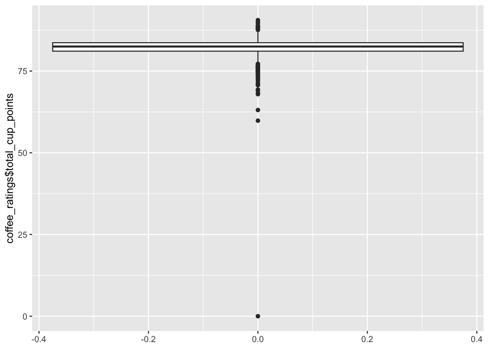
# This quick boxplot shows that all data points except for one are at least above 50 cup points, while one sits at 0. Judgment call would be to remove this observation from the data while analyzing total cup points.summary(coffee_ratings$total_cup_points[coffee_ratings$total_cup_points >0])
Min. 1st Qu. Median Mean 3rd Qu. Max.
59.83 81.10 82.50 82.15 83.67 90.58
# Here I made a summary of total cup points without the zero value. It changes the mean and 1st quartile very slightly but not by what I think is a significant amount. Though the zero value isn't affecting the data much, I will still remove it during cleaning because it skews plots extremely far and I believe it is not an actual intended value.
Looking at Altitude Variables
# There are 4 altitude variables: "altitude", "altitude_low_meters", "altitude_high_meters", and "altitude_mean_meters". The first has 226 missing values, while the latter three have 230 missing values. summary(coffee_ratings$altitude) # Getting a summary of this variable brings weird results because the variable is a string, values don't have standard units. In my analysis, will use "altitude_mean_meters" because it gives the average altitude for each coffee and is in standard units of meters already. This is in meters above sea level.
Min. 1st Qu. Median Mean 3rd Qu. Max. NAs
1 1100 1311 1775 1600 190164 230
# Mean (1775m) and median (1311m) are quite different, suggesting outliers skewing the mean higher. The maximum value is 190164m, which is not a possible altitude. Glancing at the column for this variable, I see there are a few observations that show values greater than the highest possible altitude on the planet (about 9000m). Because I do not know if these are typos or a wrong value, I am going to remove them from this dataset for anaylsis. Will confirm judgment through a boxplot of mean altitude.ggplot(coffee_ratings, aes(y = coffee_ratings$altitude_mean_meters)) +geom_boxplot()
Warning: Removed 230 rows containing non-finite outside the scale range
(`stat_boxplot()`).
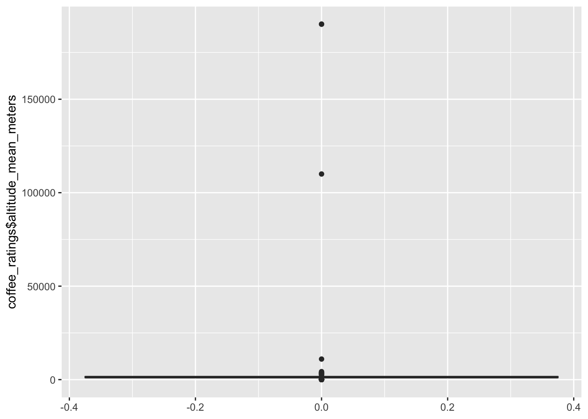
#Question: What happens to the distribution/visualization when I remove the extreme values/potential typos?cleaned_altitude <- coffee_ratings[!is.na(coffee_ratings$altitude_mean_meters) &coffee_ratings$altitude_mean_meters <9000,]ggplot(cleaned_altitude, aes(y = altitude_mean_meters)) +geom_boxplot()
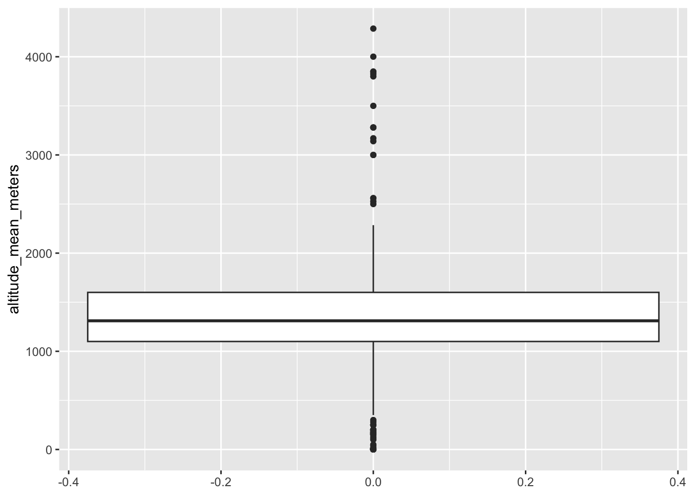
#This cleaned boxplot makes it a lot easier to visualize almost all of the data, as opposed to the previous boxplot, where it was impossible to see any values except for the outliers. For me, this justifies cutting those outliers from the analysis.summary(cleaned_altitude$altitude_mean_meters)
Min. 1st Qu. Median Mean 3rd Qu. Max.
1 1100 1311 1328 1600 4287
# Now we see that the mean (1328m) and median (1311m) are much closer, suggesting the outliers were skewing the mean heavily.
Final Cleaning of Quality Score and Altitude Data
# edit cleaned_altitude to remove the 0 value from the quality score variable, so that data is ready to analyze!altitude_score_data <- coffee_ratings %>%filter(total_cup_points >0, altitude_mean_meters <9000) %>%select(total_cup_points, altitude_mean_meters)# This data which I will now use to explore altitude and quality score, is 2 column and 1104 rows. This has excluded data with missing values, a zero value in quality score, and potential mis-entered values in altitude.
How is altitude related to cup points?
# First let's look at a box plot to see if the general spread, then we can split the datafull.data <-ggplot(altitude_score_data, aes(x = altitude_mean_meters, y = total_cup_points)) +geom_point() +labs(title ="Unsplit Data")cor(altitude_score_data$altitude_mean_meters, altitude_score_data$total_cup_points)
[1] 0.1523517
# Boxplot doesn't seem to show any specific pattern, and calculating correlation seems to be pretty low (~0.15). Will randomly split the data to see if this holds up.set.seed(67)altitude_score_data$half <-sample(rep(c("explore", "hold out"), length.out =nrow(altitude_score_data)))table(altitude_score_data$half)
explore hold out
552 552
# Let's make a scatterplot for the "explore" halfexplore_half <-ggplot(filter(altitude_score_data, half =="explore"), aes(x = altitude_mean_meters, y = total_cup_points)) +geom_point() +labs(title ="Explore Half") #has similar spread to the unsplit scatterplotholdout_half <-ggplot(filter(altitude_score_data, half =="hold out"), aes(x = altitude_mean_meters, y = total_cup_points)) +geom_point() +labs(title ="Hold Out Half")#I would judge that the scatterplots have generally the same shape and spread, so results can be predictable throughout the data and I will analyze the data as a whole set for this specific question.figure1 <- (full.data)/(explore_half + holdout_half) # FIGURE 1# From the scatterplots, there doesn't appear to be a relatonship between altitude and quality score. What about if we convert altitude to a categorical variable with levels, what will we see?#making cuts to turn altitude from number to categoryaltitude.cuts <-quantile(altitude_score_data$altitude_mean_meters, c(0, 1/3, 2/3, 1), na.rm =TRUE)altitude.cuts
0% 33.33333% 66.66667% 100%
1 1200 1500 4287
altitude_score_data$mean_altitudes <-cut(altitude_score_data$altitude_mean_meters, breaks = altitude.cuts, labels =c("Low Elevation", "Middle Elevation", "High Elevation"), include.lowest =TRUE, ordered_result =TRUE)# Will have to also make quality score a categorical variable to make a frequency table and do a chi-square test to see if altitude and score are independent.score.cuts <-quantile(altitude_score_data$total_cup_points, c(0, 1/3, 2/3, 1), na.rm =TRUE)score.cuts
altitude_score_data$qualitylevels <-cut(altitude_score_data$total_cup_points, breaks = score.cuts, labels =c("Lower Third Scores", "Middle Third Scores", "Higher Third Scores"), include.lowest =TRUE, ordered_result =TRUE)altitude.vs.score <-table(altitude_score_data$mean_altitudes, altitude_score_data$qualitylevels, dnn =c("Mean Altitude (m)", "Quality Score Level"))altitude.vs.score
Quality Score Level
Mean Altitude (m) Lower Third Scores Middle Third Scores Higher Third Scores
Low Elevation 164 134 91
Middle Elevation 137 125 99
High Elevation 69 117 168
# While the Lower and Middle Third Score groups do not seem to have too much variation in their distribution of elevation, I see that the Higher Third Scores group has a lot more observations in High Elevation. This makes me wonder whether altitude and score are independent, so I will perform a Chi-square test. Expected counts are all above 5, so test will be valid. chisquaretest1 <-chisq.test(altitude.vs.score)chisquaretest1
Quality Score Level
Mean Altitude (m) Lower Third Scores Middle Third Scores Higher Third Scores
Low Elevation 130.4 132.5 126.1
Middle Elevation 121.0 122.9 117.1
High Elevation 118.6 120.6 114.8
round(chisquaretest1$residuals, 1)
Quality Score Level
Mean Altitude (m) Lower Third Scores Middle Third Scores Higher Third Scores
Low Elevation 2.9 0.1 -3.1
Middle Elevation 1.5 0.2 -1.7
High Elevation -4.6 -0.3 5.0
# Unlike the scatterplot and correlation coefficient, the chi-square test is suggesting the alternative hypothesis, which is that Mean Altitude may not be independent of Quality Score. One observation that could hint at this test result is the larger variation of score points in the Middle Elevation category. This is shown in the scatterplot. Conversely, the data points that fall in the High Elevation category do not exhibit as much variation; the points are generally at a higher score. The results of the EDA could suggest that while there is not a linear relationship between altitude and quality score, coffee grown at middle elevation may be correlated with a lot of variation in total cup points.
Which Countries Produce the Highest Rated Coffees?
# First I want to see how many countries are included in this data, to see if it would be helpful to exclude some for easier visualization.unique(coffee_ratings$country_of_origin) #37 unique values, which includes 1 NA. 2 values are United States (Hawaii) and United States (Puerto Rico). I will keep these two as their own separate values because their climates and landscapes are different from the rest of the contiguous U.S.
# Will make a quick bar chart to see if any of the countries stand out.ggplot(coffee_ratings, aes(x = country_of_origin, y = total_cup_points)) +geom_col()
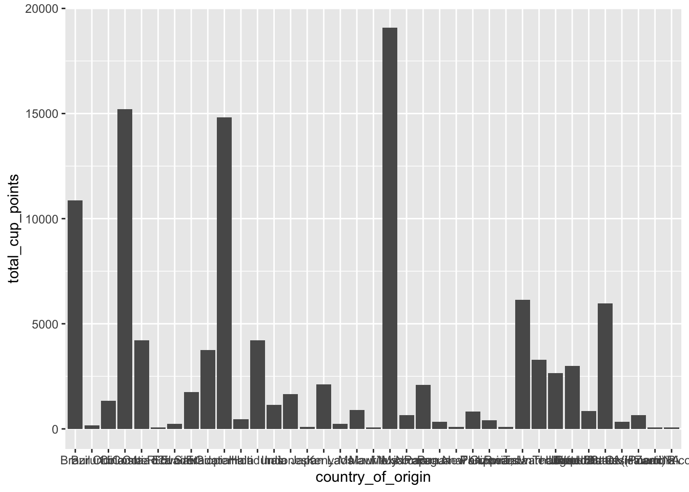
# This bar chart isn't really helpful since it aggregates the total cup points a country might have.# Next idea would be to make a subset of the data that includes the top 10% of coffee scores, and then seeing where these coffees are from and visually representing that. toptenthreshold <-quantile(coffee_ratings$total_cup_points, probs =0.90, na.rm =TRUE)top_ten_scores <- coffee_ratings[coffee_ratings$total_cup_points > toptenthreshold, ]summary(top_ten_scores$total_cup_points)
Min. 1st Qu. Median Mean 3rd Qu. Max.
84.75 85.08 85.58 86.04 86.50 90.58
# This subsets the observations that are above the score of the 90th percentile. The lowest score above the 90th percentile is 84.75, and the highest is 90.58. #Which countries have coffee in the top 10%, and how many coffees in this data belong to each country listed?top.countries <- top_ten_scores %>%count(country_of_origin, sort =TRUE) %>%slice_head(n =5)top.countries
# A tibble: 5 × 2
country_of_origin n
<chr> <int>
1 Ethiopia 27
2 United States (Hawaii) 11
3 Brazil 10
4 Colombia 10
5 Kenya 10
# This shows there are 21 countries that have coffee in the top 10% of quality scores. That is over half of the total number of countries and still a lot to work with, so I am going to do the top 5 countries, i.e., the countries with the 5 highest count of coffee ratings in the top 10% of scores. top.country.ratings <- top_ten_scores %>%filter(country_of_origin %in% top.countries$country_of_origin) %>%select(country_of_origin, total_cup_points)top.country.ratings
# A tibble: 68 × 2
country_of_origin total_cup_points
<chr> <dbl>
1 Ethiopia 90.6
2 Ethiopia 89.9
3 Ethiopia 89
4 Ethiopia 88.8
5 Brazil 88.8
6 Ethiopia 88.7
7 Ethiopia 88.4
8 Ethiopia 88.2
9 Ethiopia 88.1
10 United States (Hawaii) 87.9
# ℹ 58 more rows
# The countries with the most coffees in the top 10% of quality scores are Ethiopia, United States (Hawaii), Brazil, Colombia, and Kenya.figure2 <-ggplot(top.country.ratings, aes(x = country_of_origin, y = total_cup_points)) +geom_boxplot() +labs(x ="Country of Origin", y ="Total Cup Points", title ="The Top 5 Countries of the Top 10% Country Ratings") # FIGURE 2 figure2
# Here we can see the distribution of those ratings that are from the 5 countries with the most coffees in the top 10% of scores. Ethiopia has the coffee with the highest quality score, but also the most variation in the coffees presented. Brazil also has a high median score, while Colombia seems to have the lowest of this group.
Which Countries Have the Top Ten Individual Coffee Ratings
# We saw which countries had the highest amount of coffee ratings in the top 10% of the data, but we can take a closer look to see what the top 10 actual scores are and which countries coffee_ratings %>%slice_max(order_by = total_cup_points, n =10) %>%select(country_of_origin, total_cup_points)
# This code lists the top 10 coffee ratings and their country of origin. Ethiopia has 7 of the 10 top coffees in this dataset. Guatemala has the 3rd, Brazil has the 6th, and Peru has the 7th. What is interesting is that Guatemala and Peru are not in the list of 5 countries with the most coffees in the top 10% of scores, yet they have one of the highest rated coffees. Is this just a one-off good coffee from these countries, or do they have some other high rated coffees? Or generally high rated coffee overall in their country?
Coffee Rating Summaries for Ethiopia, Guatemala, Brazil, and Peru
# These are the countries that have the top 10 coffee ratings. I want to see how their mean and median coffee ratings compare to each country's top coffee. # summary for Ethiopiacoffee_ratings %>%filter(coffee_ratings$country_of_origin =="Ethiopia") %>%select(total_cup_points) %>%summary()
total_cup_points
Min. :80.00
1st Qu.:84.06
Median :85.20
Mean :85.48
3rd Qu.:87.12
Max. :90.58
# Range (80-90.58), mean (85.48), median (85.20)# Mean and median fall within the Higher Scores category from previous section.
# summary for Guatemalacoffee_ratings %>%filter(coffee_ratings$country_of_origin =="Guatemala") %>%select(total_cup_points) %>%summary()
total_cup_points
Min. :59.83
1st Qu.:80.67
Median :82.50
Mean :81.85
3rd Qu.:83.50
Max. :89.75
# Range (59.83-89.75), mean (81.85), median (82.50)# Guatemala has the lowest individual coffee rating of the entire dataset. Mean and median in the Middle Score category. Seems to have a lot of variation.
# summary for Brazilcoffee_ratings %>%filter(coffee_ratings$country_of_origin =="Brazil") %>%select(total_cup_points) %>%summary()
total_cup_points
Min. :70.67
1st Qu.:81.73
Median :82.42
Mean :82.41
3rd Qu.:83.25
Max. :88.83
# Range (70.67-88.83), mean (82.41), median (82.42). Mean and median in the Middle Score Category. Some variation as well.
# summary for Perucoffee_ratings %>%filter(coffee_ratings$country_of_origin =="Peru") %>%select(total_cup_points) %>%summary()
total_cup_points
Min. :77.00
1st Qu.:80.17
Median :82.80
Mean :82.53
3rd Qu.:84.33
Max. :88.75
# Range (77-88.75), mean (82.53), median (82.80). Mean and median in Middle Score Category. Not as much variation as Brazil and Guatemala.
Overall conclusions about the countries that have the top 10 coffees is that Ethiopia seems to have, on average, the highest average coffee ratings, as well as the #1 coffee ratings. The other countries in the top 10 have more variation, with a good share of lower rated coffees as well. Some of the countries in the top 10 don’t have a lot of other coffees that are in the top 10% of coffee ratings data.
Examining Patterns Across Varieties
#First want to look at the variables, and the levels/types of each variable# coffee varietiesunique(coffee_ratings$variety) #29 unique values, 1 is NA. There are 226 missing values
#make a set of boxplots for the varieties, filtering out the 0 value for total cup points and removing missing values/NAs from both variablescoffee_ratings %>%filter(!is.na(coffee_ratings$variety), !is.na(coffee_ratings$total_cup_points), total_cup_points >0) %>%ggplot(aes(x = total_cup_points, y = variety)) +geom_boxplot()
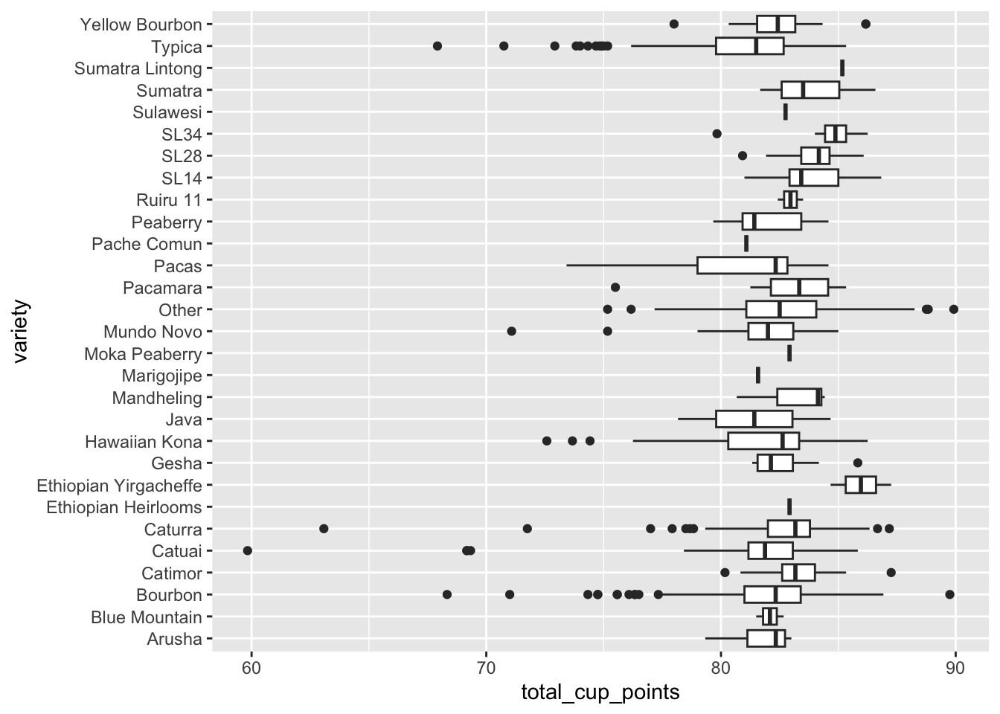
# This plot doesn't tell us much about if some varieties have higher ratings, but can tell us a few things. Some of the varieties have a lot of lower rated outliers. The Catuai variety has the lowest rated coffee, while the two highest rated that are displayed are labeled Bourbon and Other.
Examining Patterns Across Processing Methods
#quick look at processing methodsunique(coffee_ratings$processing_method) #4 methods + 1 NA value
# This barplot shows the frequency of each processing method. The method with the highest frequency is the Washed/Wet method, while Natural/Dry is the second most common but is less than half as common as Washed/Wet in this dataset. I wonder if there is a relationship between the method and altitude?
Processing Method vs. Altitude
# I will keep the NAs in this analysis for now because it is it's own category, but if I am going to perform a test on the independence later, I will remove it.# boxplot of mean altitude, grouped by processing method. Using the cleaned_altitude eariler from the first section so that incorrect values are excluded. ggplot(cleaned_altitude, aes(x = processing_method, y = altitude_mean_meters)) +geom_boxplot()
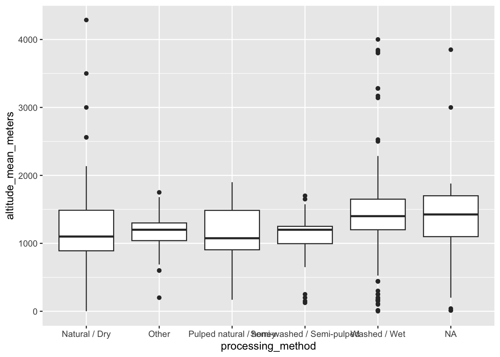
# There don't seem to be any great differences in altitude across processing methods, but might make a scatterplot of altitude vs. total cup points while grouping by processing method to see if they are clustering in similar areas. # i will have to mutate the altitude_score_data to add a column for processing method# taking out the NAs and Others because they are just crowding up the plot and we don't even know what methods they arefigure3 <- coffee_ratings %>%filter(!is.na(altitude_mean_meters), !is.na(processing_method), !(processing_method =="Other"),altitude_mean_meters <9000, total_cup_points >0) %>%select(processing_method, altitude_mean_meters, total_cup_points) %>%ggplot(., aes(x = altitude_mean_meters, y = total_cup_points, color = processing_method)) +geom_point(alpha =0.4) +labs(x ="Mean Altitude (m)", y ="Total Cup Points", color ="Processing Method", title ="Altitude vs. Quality Score, Grouped by Processing Method") # FIGURE 3figure3
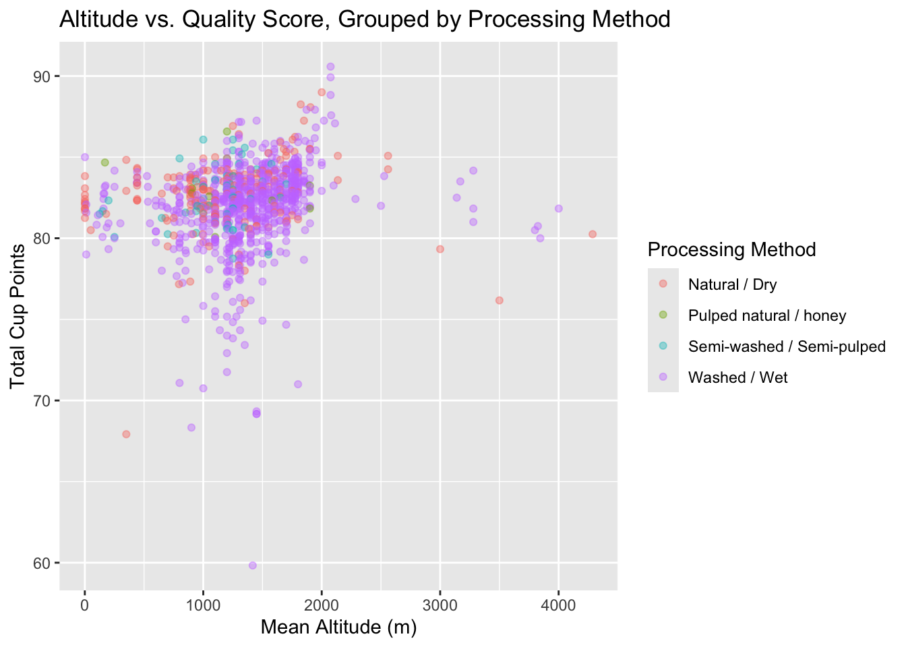
# According to the scatterplot, there doesn't really seem to be any kind of coherent pattern or clustering of certain processing methods with different altitudes or cup points, much like the boxplot suggested. # I wonder if processing methods are more or less common in certain countries? But to look at all the 37 categories for country_of_origin is a lot, so I will group the countries into larger continent groups and analyze by continent.unique(coffee_ratings$country_of_origin)
coffee_ratings <- coffee_ratings %>%mutate(continent =case_when( country_of_origin %in%c("Ethiopia", "Rwanda", "Burundi", "Malawi", "Mauritius", "Uganda", "Tanzania, United Republic Of", "Cote d?Ivoire", "Kenya", "Zambia") ~"Africa", country_of_origin %in%c("United States", "Costa Rica", "El Salvador", "Haiti", "Guatemala", "United States (Hawaii)", "Mexico", "Nicaragua", "Colombia", "Brazil", "Panama", "Ecuador", "Peru", "Honduras", "United States (Puerto Rico)") ~"North/Central/South America", country_of_origin %in%c("Taiwan", "Thailand", "Myanmar", "India", "Japan", "Indonesia", "Vietnam", "Laos", "China", "Phillippines", "Papua New Guinea") ~"Asia"))# Now let's make a contingency table and a bar plot to see if some methods are more common in different continentschitest2 <- coffee_ratings %>%filter(!is.na(processing_method), !is.na(country_of_origin)) %>%with(table(continent, processing_method, dnn =c("Continent", "Processing Method")))coffee_ratings %>%filter(!is.na(processing_method), !is.na(country_of_origin)) %>%ggplot(aes(x = continent, fill = processing_method)) +geom_bar(position ="stack")
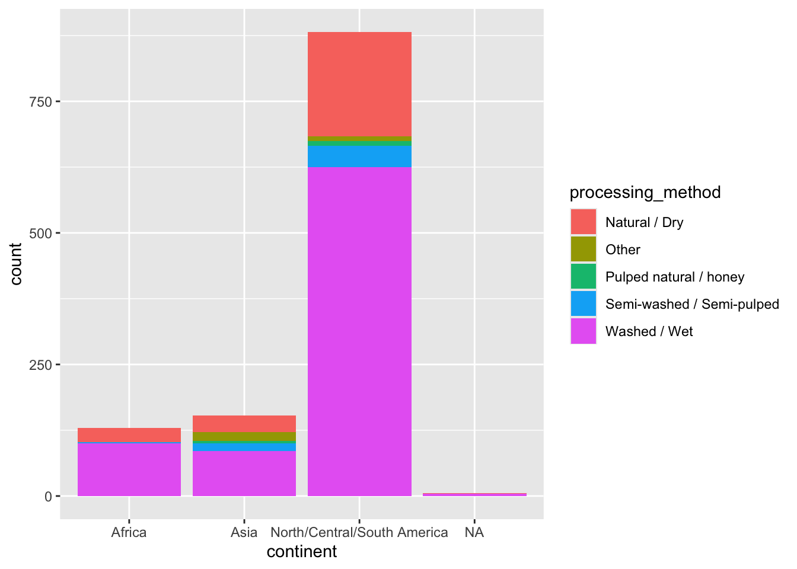
# We can see from this stacked bar plot that Washed/Wet seems to be the most common throughout the contients. Another interesting observation is that countries in Africa don't seem to use Pulped natural/honey according to this data.# Is a chi square test appropriate to do here to see if Continent and Processing Method are independent? I would say no because there are a lot of observed counts that are below 5 so the test wouldn't be valid. I will conclude that there is no significant observed pattern between continent and processing method.
WRITE EDA CONCLUSIONS HERE AND 2-3 APPROPRIATE VISUALIZATIONS
First, I cleaned the data of anything that might interfere with or skew the data. I noticed a few inputted values that might be typos or mis-entered data, so I excluded them just to make sure they didn’t wildly alter the analysis. This included a value from “Total Cup Points” that read 0, 230 missing values from “Altitude Mean Meters”, and a few values from “Altitude Mean Meters” that seemed wrongly entered, since they read as altitude measures that are not possible (such as >190,000m). After removing these, I split the data while analyzing altitude vs. score to make sure that the pattern (or lack thereof) was predictable in both halves. There does not seem to be a linear relationship between altitude and total cup points, which is suggested both by the box plots that I produced before and after splitting the data. However, there might be some other relationship at play because my Chi Square test of independence between Altitude and Quality Score produced a result suggesting that the two variables are not independent. This would require more advanced analysis, however. I found that countries such as Ethiopia, the United States (Hawaii), Brazil, Colombia, and Kenya are producing the most coffees that are in the top 10% of quality scores in this dataset. Moreover, Ethiopia has 7 of the 10 highest scored coffees in this data, and the highest average coffee score rating of those countries that have a coffee in the 10 highest scored. - Through some exploration, I decided coffee variety isn’t necessarily a helpful variable to explore in this dataset. There are too many unique values that can’t be grouped or simplified in any meaningful way. - As for processing methods, the most common seems to be the Washed/Wet method. There doesn’t seem to be any significant pattern or clustering of Processing Method across Altitude and Cup Points, suggesting it is not interacting significantly in this dataset.
2-3 Appropriate Visualizations
figure1
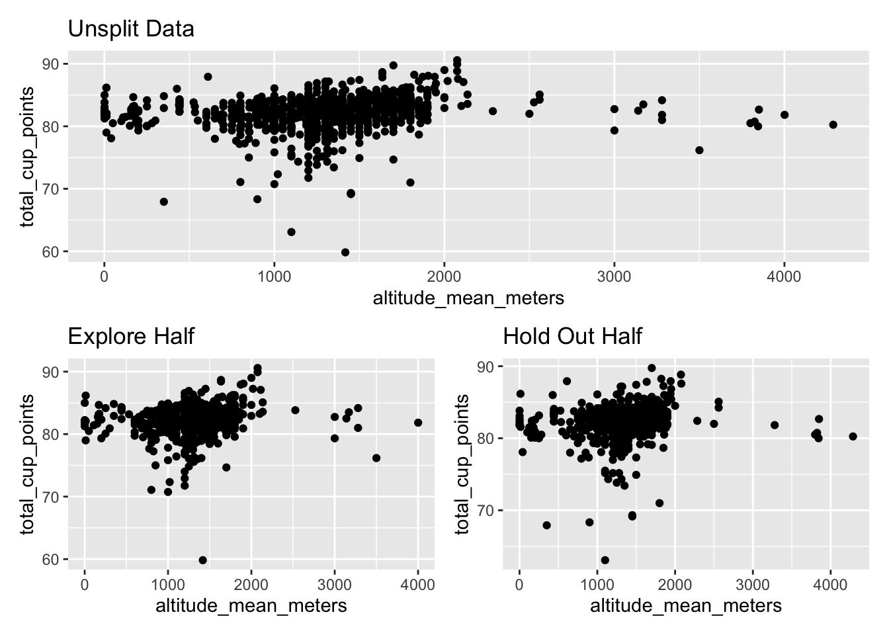
figure2
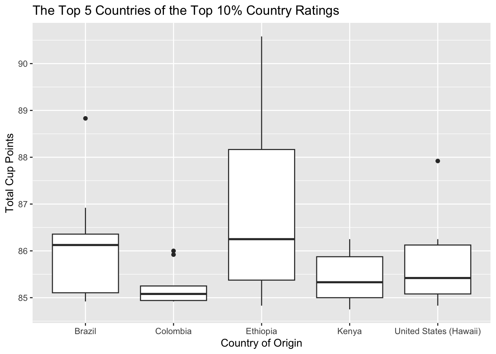
figure3
PART 2
Publication Ready Plot
coffee_clean <- coffee_ratings %>%filter(!is.na(altitude_mean_meters),!is.na(total_cup_points),!is.na(continent), altitude_mean_meters >0, altitude_mean_meters <3000, total_cup_points >0)ggplot(coffee_clean, aes(x = altitude_mean_meters, y = total_cup_points, color = continent)) +geom_point(alpha =0.8) +scale_colour_manual(values =c("#009E73", "#CC79A7", "#56B4E9")) +labs(x ="Mean Altitude (meters)", y ="Total Cup Points", color ="Continent", title ="Examining Mean Altitude versus Quality Score, Across Continents") +facet_wrap(~ continent) +theme_light(base_size =14)
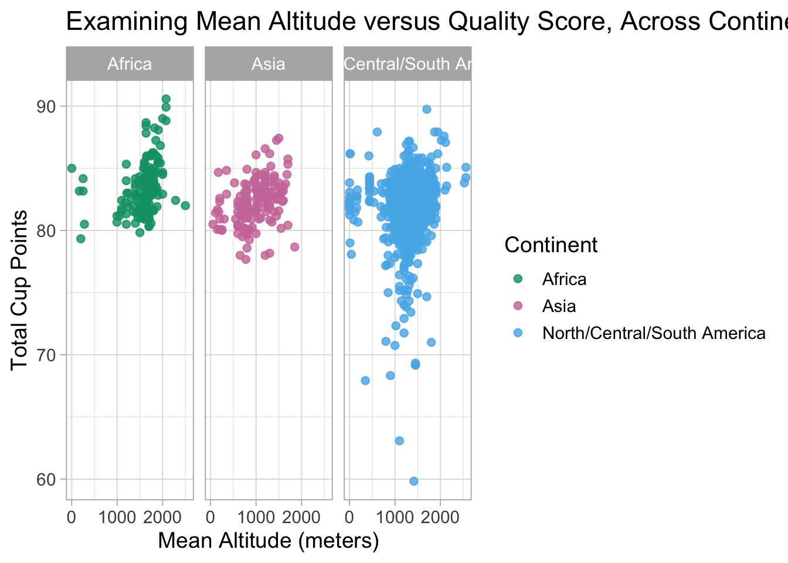
Design Choices
Firstly I chose to use my continent variable to represent the geographic differences instead of by country, which narrows down the large set of 37 countries to 3 groups, making it much easier to visualize. I changed the color palette to three very different colors using a colorblind palette that I found online.
Ugly Plot
coffee_clean2 <- coffee_ratings %>%filter(!is.na(altitude_mean_meters),!is.na(total_cup_points), altitude_mean_meters <9000, altitude_mean_meters >0)ggplot(coffee_clean2, aes(x = altitude_mean_meters, y = total_cup_points, color = continent)) +geom_point(alpha =0.8) +scale_colour_manual(values =c("#6A4325", "#8B0000", "#006400")) +labs(x ="altitude", y ="score", color ="country", title ="Altitude versus Cup Points") +theme_dark(base_size =7)
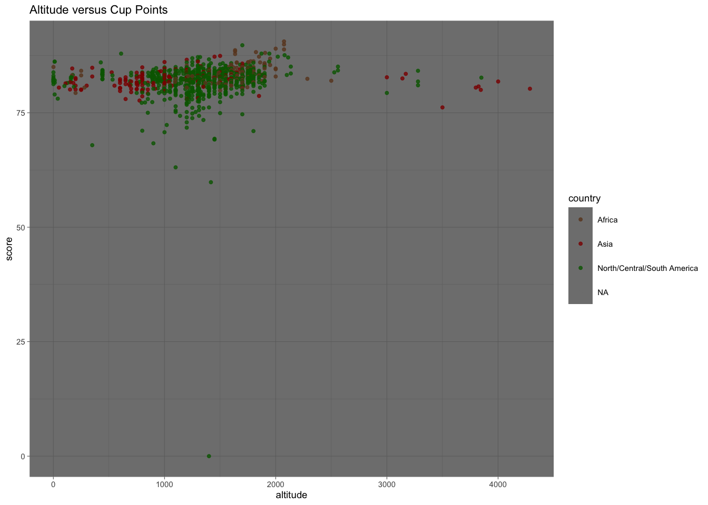
What makes the plot so terrible?
The colors to group the continents are not color blind friendly.
There are no units for altitude on the x-axis.
The axis and legend labels are either incorrect or not professional.
The title is not informative.
The theme makes the data points even harder to see.